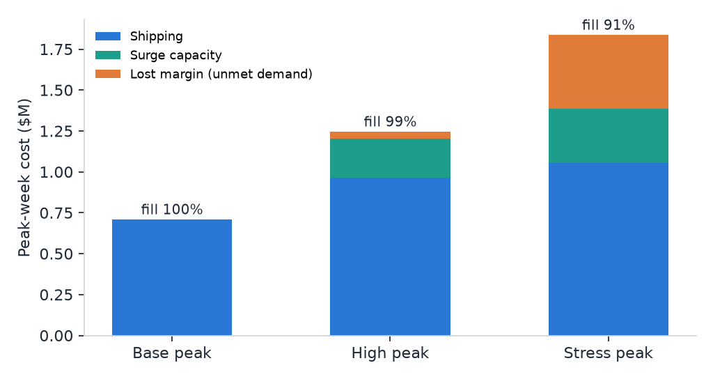
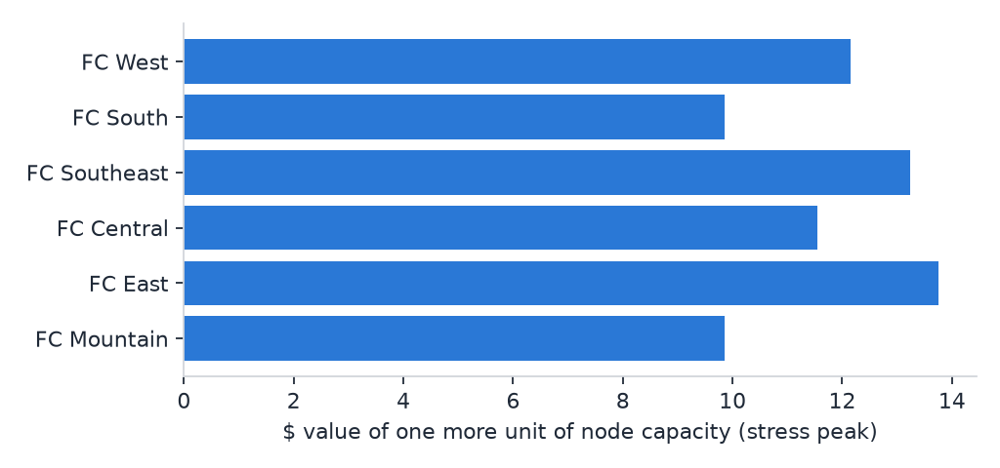
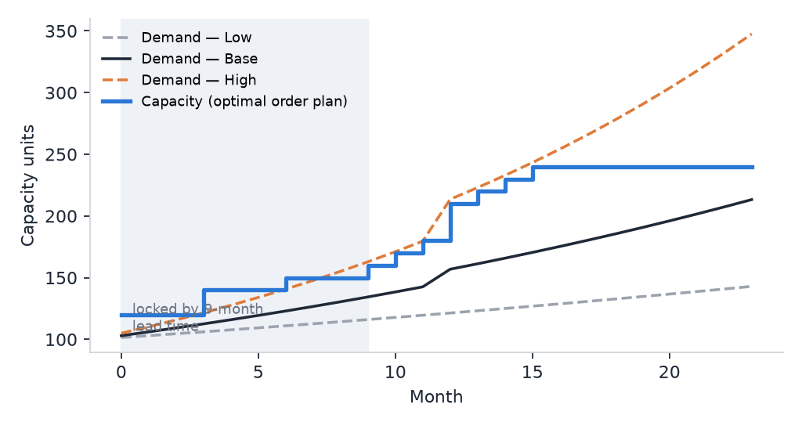
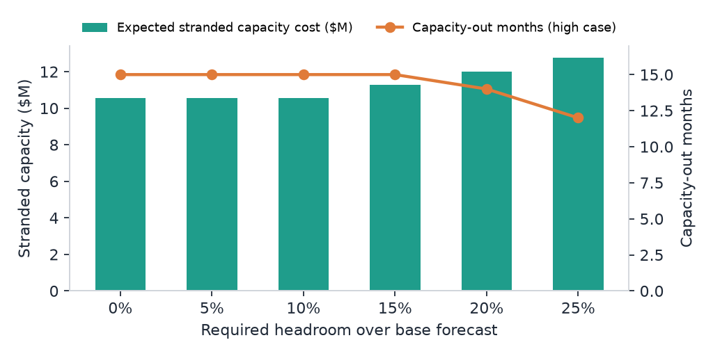
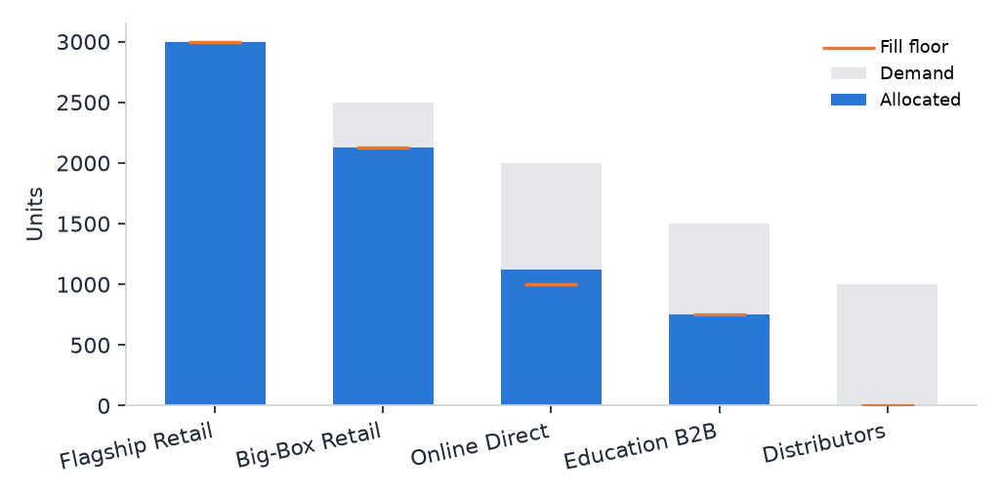

Independent portfolio project. All data is synthetic. The problem shapes come from planning work I've done (fulfillment networks, contract-manufacturer allocation, supplier and line capacity), but no employer data, systems, or figures are used.
Model 1 · Mixed-integer program
Peak network & carrier allocation
What it decidesWhich fulfillment node serves each region by which carrier, and where to open surge capacity for peak week.
Why it mattersPeak capacity is booked weeks ahead. Too little means missed delivery promises and lost sales; too much is paid-for space that sits idle.
What it foundUnder stress demand, carrier capacity runs out before building capacity, so adding surge space alone cannot hold fill.
100%fill, base peak
91%fill, stress peak (+38%)
11surge blocks opened, stress
$14top value of +1 unit node capacity


How it's modeled
- Decisions: units shipped per node → region → carrier (continuous); surge blocks per node (integer, 0–3).
- Objective: minimize shipping cost + surge cost ($30,000 per 4,000-unit block) + $22 lost margin per unmet unit.
- Constraints: every region's demand is met or counted as unmet; node capacity plus surge; carrier capacity per node; only lanes that meet a 3-day delivery promise are allowed.
- Shadow prices: re-solved as a linear program with surge fixed, to read what one more unit of capacity is worth at each node.
Model 2 · Stochastic mixed-integer program
Long-lead capacity expansion
What it decidesHow many capacity blocks to order each month when every order lands 9 months later, before you know which demand scenario will play out.
Why it mattersOrder too late and customers hit a capacity-out; order too early and capital sits stranded. One order plan has to work across low, base, and high growth.
What it foundThe first 9 months are already decided by past orders. A bigger buffer over the base forecast adds stranded capital but barely protects the high case, which argues for staged, cancellable commitments.
9blocks ordered, optimal plan
$32.4Mexpected total cost
0capacity-out months, base case
15 → 12high-case capacity-out months, 0% → 25% headroom


How it's modeled
- Decisions: blocks ordered per month (integer); one plan for all scenarios, because orders are committed before demand is known.
- Objective: minimize capital ($1.2M per 10-unit block) + probability-weighted idle cost ($12,000 per unit-month) + shortfall cost ($90,000 per unit-month).
- Constraints: capacity in month t = installed + pipeline + orders placed 9+ months earlier; balance of capacity, demand, shortfall and idle per scenario; optional headroom policy over base demand.
- Scenarios: low / base / high growth (25% / 50% / 25%), with a step ramp in month 12.
Model 3 · Linear program · also in Excel Solver
Constrained supply allocation
What it decidesHow to split supply that is 30% below demand across channels with different margins and contractual fill floors.
Why it mattersShortage calls usually end up as negotiations. A model makes the trade-off explicit, so each team can see what its commitment costs.
What it foundOne more unit of supply is worth $48. Honoring every fill floor costs $15,125 in margin, and the Education floor alone costs $18 per unit.
$276,875margin, all floors honored
$48value of +1 unit of supply
$24,000value of +500 units
$15,125cost of all fill floors

Excel version
Download constrained_allocation_solver.xlsx. The Solver dialog comes pre-loaded (objective, changing cells, constraints, Simplex LP): open it, go to Data > Solver > Solve, and compare with the PuLP answer in column I. Tick the Sensitivity report to see the same shadow prices.
Download constrained_allocation_solver.xlsx. The Solver dialog comes pre-loaded (objective, changing cells, constraints, Simplex LP): open it, go to Data > Solver > Solve, and compare with the PuLP answer in column I. Tick the Sensitivity report to see the same shadow prices.
Run it
Reproduce the results
python -m venv .venv && source .venv/bin/activate pip install "pulp>=2.9,<3" highspy matplotlib openpyxl python run_all.py # CBC solver (bundled with PuLP) python run_all.py --highs # same models on HiGHS python excel/build_workbook.py